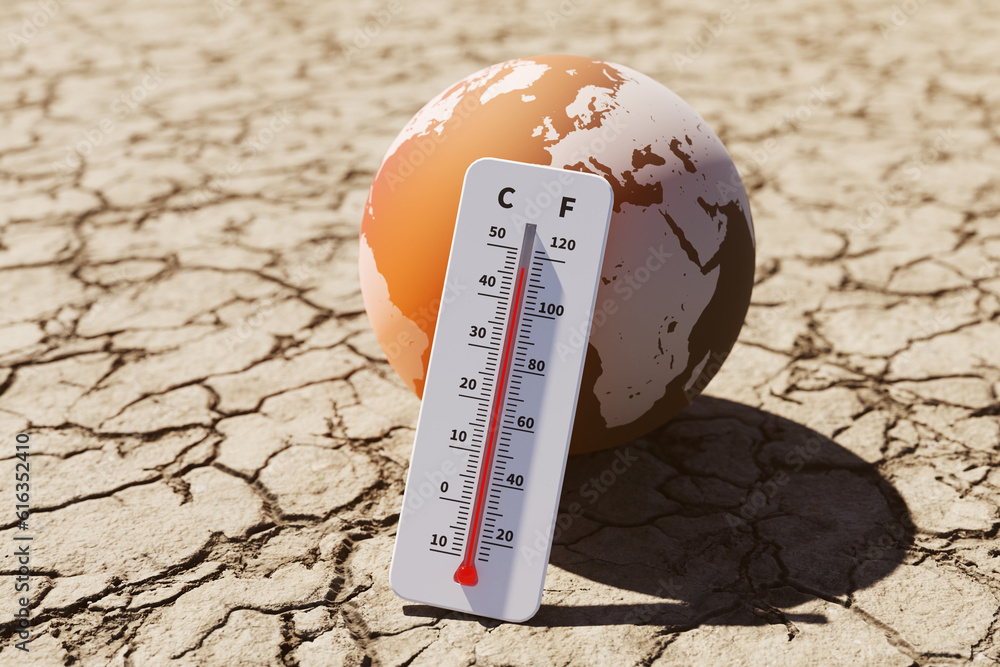
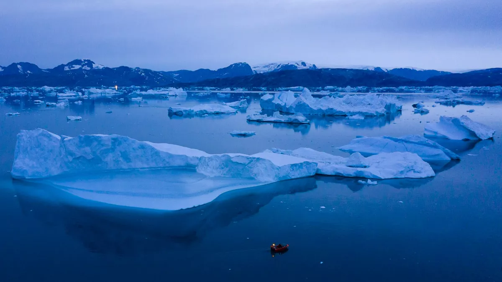
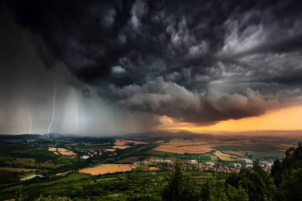
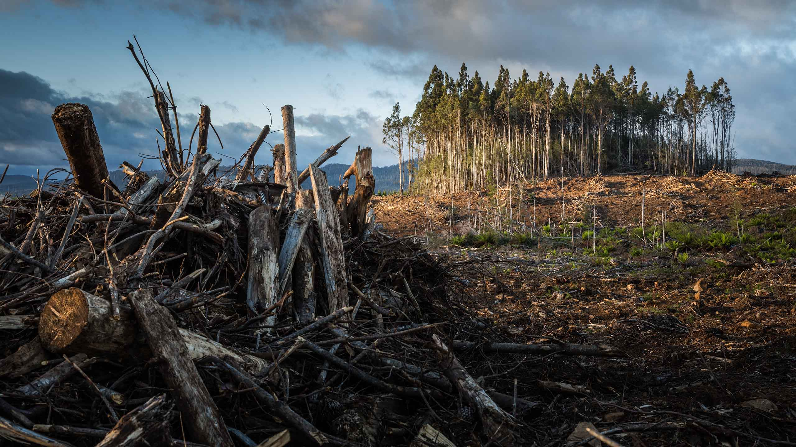

THE FUTURE OF OUR PLANET
THE EARTH
WE LEAVE BEHIND
Climate change is not a distant problem. It is happening now — and the choices we make today will shape the world we leave behind. The future isn't somewhere we are going. It's something we are creating.

01 — UNDERSTANDING THE PROBLEM
OUR PLANET
IS CHANGING.
Climate change refers to long-term changes in Earth's temperature, weather patterns and natural systems. Human activities have accelerated these changes.
RISING TEMPERATURES

Earth's average temperature is increasing, affecting ecosystems, communities and natural systems.
RISING SEA LEVELS

Melting ice and warming oceans contribute to rising sea levels around the world.
EXTREME WEATHER

Climate change can increase risks from heatwaves, floods, droughts and intense storms.
LOSS OF NATURE

Changes in climate can disrupt habitats, ecosystems and biodiversity.
02 — THE CAUSES
WE ARE PART
OF THE PROBLEM.
Modern society depends heavily on activities that release greenhouse gases into the atmosphere.
INDUSTRY

03 — THE CONSEQUENCES
A WORLD
IN TRANSITION.
OCEANS
Climate change is having a major impact on the world's oceans as rising temperatures cause seawater to become warmer and contribute to changes in marine ecosystems. Melting ice and the expansion of warmer seawater also contribute to rising sea levels, increasing th e risk of coastal flooding and threatening communities that depend on coastal environments.
BIODIVERSITY
Changes in temperature, rainfall, habitats, and ecosystems can make it increasingly difficult for many plants and animals to survive in their natural environments. As habitats are altered or lost, species may be forced to migrate, adapt to new conditions, or face greater risks to their populations, disrupting the balance of ecosystems that support life on Earth.
FOOD & WATER
Climate change can affect the availability and reliability of food and water by changing rainfall patterns, increasing droughts and floods, and placing additional stress on agricultural systems. Changes in temperature and water availability can reduce crop productivity in some regions, while communities may also face increasing challenges in accessing safe and reliable water supplies.
HUMAN COMMUNITIES
The effects of climate change are increasingly felt by communities through extreme weather, rising temperatures, changing water availability, and impacts on homes, infrastructure, and livelihoods. Communities that have fewer resources to prepare for or recover from climate-related events can face greater challenges, making climate change not only an environmental issue but also a social and economic concern.
04 — ENVIRONMENTAL SUSTAINABILITY
PROTECTING
WHAT REMAINS.
Environmental sustainability means protecting our natural environment and using Earth's resources responsibly so future generations can continue to depend on them.
FOREST CONSERVATION
Forests absorb carbon dioxide, provide habitats for wildlife and support millions of people around the world.
PROTECT OUR FORESTSWATER CONSERVATION
Freshwater is essential for life. Reducing water waste helps protect this limited natural resource.
SAVE EVERY DROPWASTE MANAGEMENT
Reducing, reusing and recycling materials can reduce pollution and decrease waste.
WASTE LESSRENEWABLE ENERGY
Solar, wind and other renewable energy sources can help reduce dependence on fossil fuels.
POWER THE FUTUREBIODIVERSITY
Protecting plants, animals and ecosystems helps maintain the balance of nature.
PROTECT LIFESUSTAINABLE CITIES
Sustainable cities use cleaner transport, greener buildings and resources more efficiently.
BUILD BETTER CITIES05 — THE NUMBERS
THE NUMBERS
TELL THE STORY.
Approximate warming above the pre-industrial average reached in recent years.
Carbon dioxide is one of the major greenhouse gases driving human-caused climate change.
Climate action is not only about the future. Decisions made today matter.
06 — THE SOLUTIONS
WE CAN STILL
CHANGE THE STORY.
Protecting the planet requires action from individuals, communities, businesses and governments.
CLEAN ENERGY
Moving towards clean and renewable energy is an important step in reducing climate change. Solar, wind, hydro, and other renewable energy sources can provide electricity with far fewer greenhouse gas emissions than fossil fuels. By reducing our dependence on coal, oil, and natural gas and increasing the use of cleaner energy, we can lower carbon emissions while building a safer and more sustainable energy system for future generations.
SUSTAINABLE TRANSPORT
Changing the way we travel can help reduce emissions from the transportation sector. Using public transportation, walking, cycling, and cleaner vehicles can reduce the amount of fossil fuel consumed by individual journeys. Developing better public transport networks and encouraging the use of electric vehicles can also create more efficient and sustainable transportation systems while reducing pollution in communities.
REDUCE WASTE
Reducing the amount of waste we produce can help lower greenhouse gas emissions and protect valuable natural resources. Simple actions such as reusing products, recycling materials, avoiding unnecessary purchases, and reducing food waste can prevent large amounts of waste from ending up in landfills. By changing the way we consume and manage resources, we can move towards a more sustainable system where materials are used efficiently instead of being constantly thrown away.
PROTECT NATURE
Protecting forests, oceans, wildlife, and other natural ecosystems is essential for maintaining a healthy planet. Natural environments absorb carbon dioxide, regulate temperatures, protect biodiversity, and provide resources that communities depend on. By preventing deforestation, restoring damaged ecosystems, and protecting natural habitats, we can strengthen nature's ability to respond to climate change while preserving the environment for future generations.
07 — YOUR ROLE
SMALL ACTIONS.
BIG IMPACT.
Sustainability starts with everyday choices. Select the actions you are willing to take.